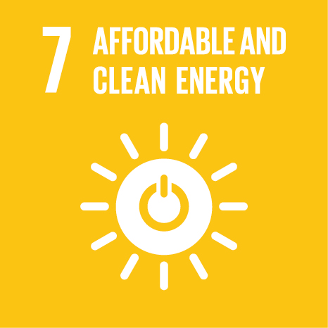
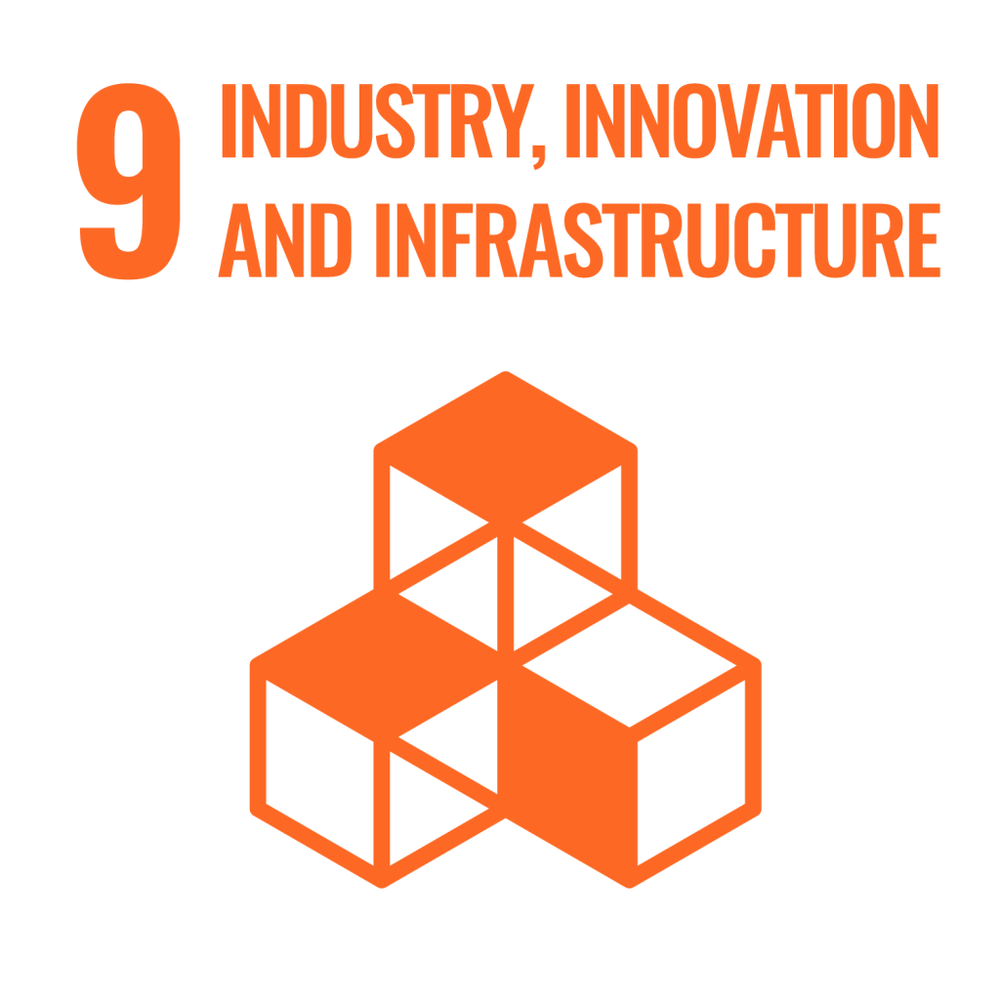

To ensure access to affordable, reliable, sustainable and modern energy for all. Our everyday
lives depend
on reliable and affordable energy to work smoothly and to develop equitably. A well-established
energy system supports all sectors like businesses, medicine, education to agriculture,
infrastructure, communications and high-technology. Conversely, the lack of access to energy
supplies and transformation systems is a constraint to human and economic development.
Target
• Ensure access to affordable, reliable, and modern energy services.
• Increase substantially that is the share of renewable energy in the total energy mix.
• Improve energy efficiency.
• Expand infrastructure and upgrade technology for supplying modern and sustainable energy
services.
Hunger and poverty was a series issue faced by the people around the world. Almost 53% of the
world's population is in this category. The basic need of a living being is to get nutritious
food and water. Human are the smartest living being among the world, but still they can't find
their own food...
• A solution to eradicate unemployment
• A technology to reduce the scarcity of food
• A system to distribute nutritional food .
Hunger and poverty was a series issue faced
by the people around the world. Almost 53% of the world's population
is in this category. The basic need of a living being is to get
nutritious food and water. Human are the smartest living being among
the world, but still they can't find their own food.. Targets
1) A solution to eradicate unemployment
2)A technology to
reduce the scarcity of food
3) A system to distribute
nutritional food .
Industrialization drives economic growth, creates job opportunities and thereby reduces income
poverty. Innovation advances the technological capabilities of industrial sectors and prompts
the development of new skills. An important component of physical infrastructure is air shipping
and air travel.
Target
• Develop sustainable, resilient and inclusive infrastructure.
• Universal access to information and communication technology.
• Ideas to upgrade industries and infrastructures for sustainability.
Clean water and sanitation are fundamental human rights. Without them, several people die each
year, and the economies of entire nations are at risk. The global economy suffers billions of
losses yearly due to a lack of basic water and sanitation. No one flourishes without access to
these essential needs, yet billions of people worldwide live without them.
Targets
•Safe and affordable drinking water for all.
•Improve water quality, wastewater treatment, and safe reuse.
•Increase water-use efficiency and ensure freshwater supplies.
•Implement integrated water resources management.
•Protect and restore water-related ecosystems
•Expand water and sanitation support in remote areas.
The world’s population is constantly increasing. To accommodate everyone, we need to build
modern & sustainable cities. For all of us to survive and prosper, we need new, intelligent
urban planning that creates safe, affordable, and resilient cities with green and culturally
inspiring living conditions.
Target
•Safe, affordable and sustainable transport and housing system
• Reduce the adverse effects of natural disasters and provide access to safe and inclusive green
and public spaces
• Protect the world's cultural and natural heritage
• Strong National and Regional Development Planning